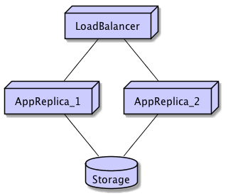

Assignment Introduction: Cloud and Big Data Business Case
Table of Contents
1 About This Text
This text introduces the Cloud and Big Data Business Case assignment.
2 Introduction
In order to understand how to “go cloud”, you must first decide why using the cloud is your best option. This involves understanding what cloud computing is, and the perceived benefits of using the cloud (and what the alterntives are).
In this assignment you explore these underpinnings of cloud computing, with a particular focus on big data applications, in order to gain a fundamental understanding of the business case for cloud computing.
The assignment is structured as a series of questions that guides you through the material. Your assignment submission is in the form of an essay that answers and reasons about these questions.
3 TODO Learning Material
3.1 Book Chapters
J. Rosenberg, A. Mateos, “The Cloud at your Service”, Manning, 2010. chapters:
- What is Cloud Computing
- Understanding Cloud Classifications
- The Business Case for Cloud Computing
- Cloud 9: The future of the Cloud
G. Reese “Cloud Application Architectures”, O’Reilly, 2009. chapters:
- Cloud Computing
- Amazon Cloud Computing
- Before the Move into the Cloud
3.2 Further Reading
B. Wilder, “Cloud Architecture Patterns”, O’Reilly, 2012., especially chapters:
- Scalability Primer
- Horizontally Scaling Compute Pattern
Other Articles:
- MongoDB queries don’t always return all matching documents. This is just one example of an article that explains challenges with nosql databases and their “eventually consistent” philosophy.
- Amazon Web Services Data Outage February 2017. A reminder why you should harden your network by replicating data over several data centres.
4 Experiential Learning
4.1 What is Cloud Computing?
Rosenberg discuss five principles of cloud computing, i.e.:
- Pooled Computing Resources
- Virtualised Computing Resources
- Elastic Scaling up or down
- Automatic creation and deletion of new VM’s
- Resource usage billed only as used
- Briefly discuss each of these princiles. Are they necessary? What do they mean for a cloud service? What do they mean for a service using the cloud?
- Is this a complete set? Are there other [fundamental] principles that you expect for cloud computing?
- Some of these principles are based in technology, others are geared towards the cloud ownership business, and some are actually relevant for a cloud user. Moreover, some of them enables the other principles. Please discuss these relationships, and what this means for a cloud user.
- Elasic Scaling is one of the key principles. Please reason about the business implications of this.
- Give examples of applications where a quick (within minutes) elastic scaling might be necessary.
- Give examples of applications where a slower scaling would be more relevant.
- If your application grows at a steady state, what does this mean for your scaling needs? Is “going to the cloud” still the best option?
- Metered Billing (“Resource usage billed only as used”) is another one of the key principles.
- Let’s say you have an application running on three machines plus a load balancer as illustrated in Figure 1. What would be the cost per hour, day, and month for this setup if you ran it yourself (Remember that network access, routers, and cooling etc. also cost money)?
- Explore the different licensing models on Amazon EC2. What would the same setup cost to run as a T2.large or M3.large setup?
- What are the differences between Amazon’s “on-demand” and the “Reserved Instance”?
- Since there is loadbalancer, we may guess that this application probably uses the CPU extensively. What is Amazon’s policies regarding CPU utilisation? Please spend some time trying to find an answer to this before “cheating” by reading this footnote: 1
- What are the consequences of Amazon’s CPU policy on a running application?
- What can you do about it?

Figure 1: A Simple Example App
- Different cloud providers offer different services (x As A Service).
- Briefly describe each of
Software As A Service,Framework As A Service,Platform As A Service, andInfrastructure As A Service. - Give examples of applications that use each of these.
- Briefly describe each of
4.2 Reasons for “Going to the Cloud”
Adopting a cloud solution is often touted for economic reasons – the metered billing aspect is particularly attractive for many companies[2.
From a technical perspective, the reasons are more geared towards quality attributes. ISO/IEC 25010:2011 (the successor of ISO 9126) lists the following quality attributes:
- Functional Suitability
- Functional Completeness
- Functional Correctness
- Functional Appropriateness
- Performance Efficiency
- Time-Behaviour
- Resource Utilisation
- Capacity
- Compatibility
- Co-existence
- Interoperability
- Usability
- Appropriateness
- Recognisability
- Learnability
- Operability
- User error protection
- User interface aesthetics
- Accessibilty
- Reliability
- Maturity
- Availability
- Fault tolerance
- Recoverability
- Security
- Confidentiality
- Integrity
- Non-repudiation
- Accountability
- Authenticity
- Maintainability
- Modularity
- Reusability
- Analysability
- Modifiability
- Testability
- Portability
- Adaptability
- Installability
- Replaceability
- Which of these may be a reason for moving towards a cloud solution (Pick the top five)? Please motivate your answers.
- Elastic Scale (and Scale in general) is one of the previously discussed key principles, but scale with respect to what?
- In what way does a cloud solution address usability?
- In what way can a cloud solution address security and all its sub-attributes?
4.3 Scalable Software Architectures
A small selection of different types of applications are described below. For each of these application types:
- Reason about which the most important quality attributes might be for the type of system.
- Reason about a software architecture that can be used to implement the type of system in a scalable way. What does “scalable” mean?
- Reason about how to also ensure Availability and Reliability in the type of system.
- Reason about how to ensure efficient, scalable, and sufficiently reliable storage of data.
System Type: Computing Jobs This system works on the principle that a large chunk of data is made available and a number of computing-intensive tasks should be performed on the data. These computations can be dependent on each other (First, do A, then do B), or independent. Moreover, the computations may require access to the entire dataset, or they may be able to work on smaller portions of the data.
System Type: Computing Stream
This system is similar to the “Computing Jobs” system, except that data arrives continuously instead of as large chunks. Obviously, this means that computations work on individual portions of the data. It may also mean that the computations are run in sequence A -> B -> C for each chunk of data. However, it may also mean that you have a large number of streams to process in parallel.
System Type: User Silos This system is a system where end-users interact with the system to perform a task. This may be a session-based task that consists of more than several steps, and the system must appear responsive for each individual user. However, there is little interaction between different users; each user experience the system as if they were currently alone on it.
System Type: User Silos with Post-Processing Similar to “User Silos”, but during one session a user may kick off one or several tasks involving considerable amounts of computations or data processing. The key here is that these tasks need not be interactive in nature – the results can be reported back to the users asynchronously (indeed, it may not even be the user that is the recipient of the tasks’ results).
System Type: Networks of Users In this type of system, the user interacts with a network of other users in realtime. When one user makes some information available, it should be made available to all other users concurrently. To “make information available” may require processing by the system (for example parsing the input format and translating it to desired formats for viewing). Each individual processing task may not be very intensive, but with a large number of concurrent users the amount of required processing power adds up. In this type of system a balance need to be struck between pushing processing back to the users’ devices and processing server-side. Pushing processing back to the clients may mean larger network transfers, and increased energy consumption on the client devices (which may be mobile devices).
4.4 Filesystems
Consider again the simple application in Figure 1. In this example there is a single database that serves both instances of the application. But what about other data that does not fit into a usual database, such as binary files, or even whole filesystems? For this, you essentially have three options:
- A self-administered networked filesystem. This requires that one of your hosts is designated as filesystem server.
- A cloud-based networked filesystem. Some cloud providers also offer online storage facilities.
- A self administered distributed filesystem that is synchronised across your hosts.
Questions:
- Briefly describe the advantages and disadvantages of each of these options.
- Briefly describe each of the storage solutions below and list benefits and liabilities3:
- Hadoop HDFS
- GlusterFS
- Amazon S3
- Amazon Glacier
- Google Cloud Storage
- What are the security implications of using Amazon S3?
4.5 Databases
For the database, today the choice is essentially between an SQL database and a NoSQL database, where NoSQL has received quite some hype in recent years (A third option is Graph databases, but these are much less common and/or popular).
- Briefly discuss the basic principles of NoSQL databases.
- What are the benefits of a NoSQL database over an SQL database?
- Give three examples of data where a NoSQL database is the most suitable storage alternative. Motivate your answer.
4.6 Security in the Cloud
- Please discuss the security benefits of cloud computing.
- Please discuss the security liabilities of cloud computing.
4.7 Assignment Submission
- Submit your essay to the teachers for marking.
- The teacher may want to book a time with you to further discuss your sumbission.
Conditions of Satisfaction
When marking the assignment we are looking for the following:
- Does the title page contain name and contact information of the author?
- Size of the assignment: Is the essay between 5-10 pages?
- Are all questions addressed?
- Are all answers motivated?
- Is the student able to both summarise existing literature and relate to own experiences?
- Is the student able to connect and discuss different sources and viewpoints on each topic?
5 Acceptance Tests
You are done with this assignment when:
 You have submitted your essay to a teacher for review.
You have submitted your essay to a teacher for review.
- You have received a passing grade from the teacher.
You may also:
- have had a meeting with the teacher to further discuss your submission.
Footnotes:
The answer is that Amazon uses something they call CPU credits to throttle your application if it uses too much CPU. (Some) more information can be found here: http://docs.aws.amazon.com/AWSEC2/latest/UserGuide/t2-instances.html .
To be precise, metered billing is perceived to be attractive for companies by authors of books about cloud computing.
Please see https://en.wikipedia.org/wiki/Comparison_of_distributed_file_systems for more options